12星座
皆さんは12星座全て言えますか？
12星座とは、本来『黄道十二星座』と呼ばれています。
黄道を含む星座のうち、へびつかい座を除く12の星座ことを指します。
プトレマイオス（Ptolemaeus）に由来していて、おひつじ座、おうし座、ふたご座、かに座、しし座、おとめ座、てんびん座、さそり座、いて座、やぎ座、みずがめ座、うお座の12星座で成り立っています。
これらの星座はほぼ黄道十二宮に対応していますが、両者の境界は厳密には一致していません。
12星座とは、本来『黄道十二星座』と呼ばれています。
黄道を含む星座のうち、へびつかい座を除く12の星座ことを指します。
プトレマイオス（Ptolemaeus）に由来していて、おひつじ座、おうし座、ふたご座、かに座、しし座、おとめ座、てんびん座、さそり座、いて座、やぎ座、みずがめ座、うお座の12星座で成り立っています。
これらの星座はほぼ黄道十二宮に対応していますが、両者の境界は厳密には一致していません。
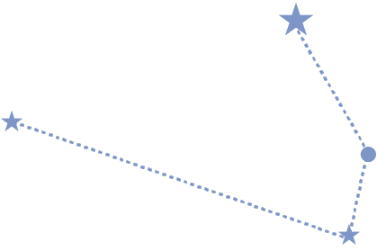
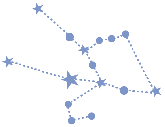
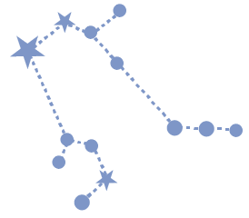
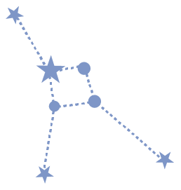
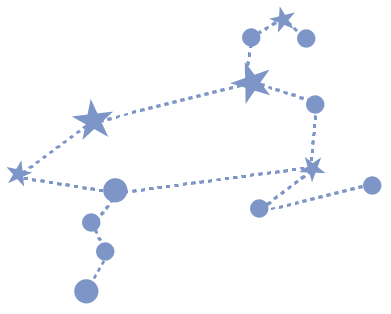
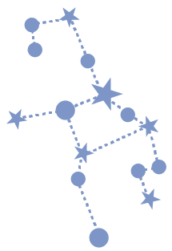
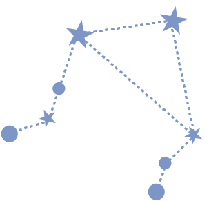
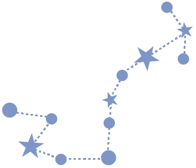
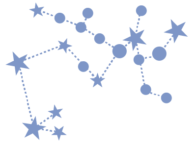
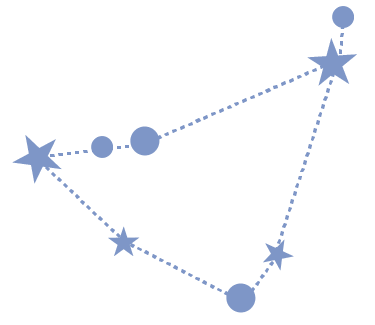
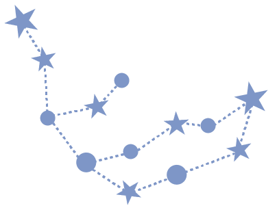
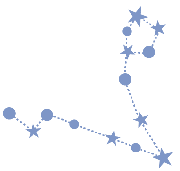